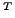
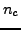
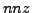
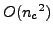
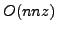
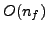

Large 3D electromagnetic problems require high performance parallel solvers as a huge amount of processing power and memory are needed. In this talk we will present a new parallel solver applied to time harmonic Maxwell equations discretized by Nedelec first order finite elements. Considering large 3D objects simulations, this formulation leads to large sparse symmetric linear systems with complex coefficients. Classical iterative methods do not behave well for this kind of problems due to ill-conditioned and indefinite matrices. Moreover, iteratively computed solutions are not accurate enough to evaluate the object's radar cross section (RCS). As a consequence, actual production software rely on PaStiX parallel direct solver which major drawback resides in memory consumption.
The aim of the presented method is to manage problems with hundreds of million unknowns with both direct method accuracy and iterative method memory efficiency. The developed solver uses a full-multigrid and direct method coupling: a parallel direct factorization-solve (LDL) is performed on coarsest level (with a relaxed edge-wavelength restriction) while fine mesh solves are carried out by a parallel matrix-free Jacobi.
As direct solves are performed only on coarsest level, memory is bounded by the coarse problem size () and more precisely by the Number of Non-Zeros () coefficients in the factorized matrix. Besides this relatively low memory consumption, coarse linear system remains the same all along the resolution where multiple coarse solves are required. As a result, the factorization may be computed once (  flops), and reused each time a coarse solve occurs ( flops). On the other hand, we choose a matrix-free method for fine solves that do not require any storage, except for solution and right hand side vectors ().
In order to obtain a scalable parallel solver, both load and communication must be balanced. As classical direct solver, PaStiX preprocessing step consists in renumbering unknowns and mapping them over processors reducing communication. Regarding fine level solves, this coarse distribution may be useful: using an homogeneous refinement step, both load balance and communication scheme are preserved. The whole method is then fully driven by the direct method.
Results obtained on simple material problems show that this method works and gives good quality solution. On the other hand, problems involving complex materials lead to low accuracy solution. Using this same method as a preconditioner of a parallel matrix free conjugate gradient show good results in terms of memory consumption and accuracy. Moreover, this Preconditioned Conjugate Gradient leads to a very fast convergence.